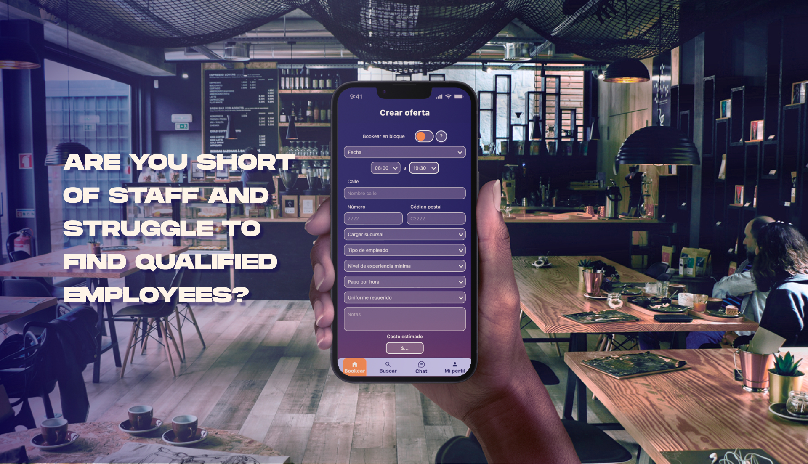
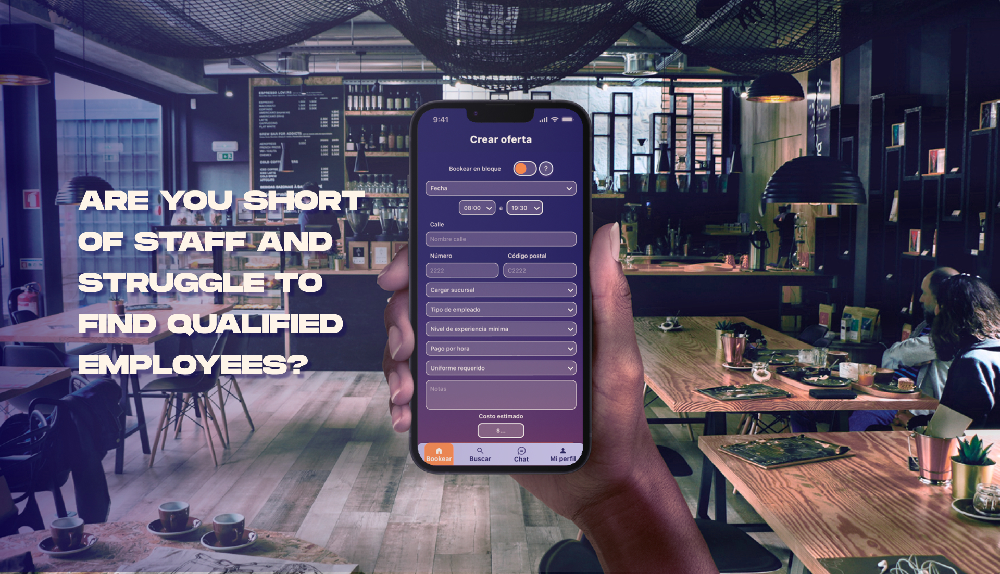

REVOLUTIONARY STAFFING SOLUTION FOR TEMPORARY HOSPITALITY WORKERS.
THE PRODUCT OWNERS ( NEST HOSPITALITY GROUP ) APPROACHED OLAPA SEEKING ASSISTANCE IN THE DESIGN AND DEVELOPMENT OF THEIR APP IDEA.
I assumed complete responsibility for the project, overseeing it from inception to completion. I crafted a user-friendly product that aligned seamlessly with market demands, emphasizing accessibility as a top priority. Throughout the project, we conducted multiple design sprints, concluding each one with client feedback sessions.


 
